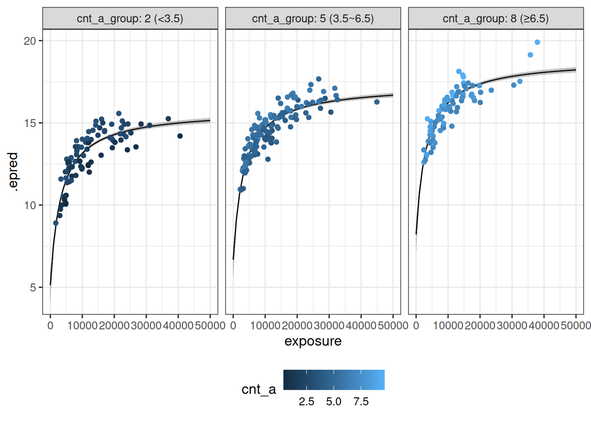
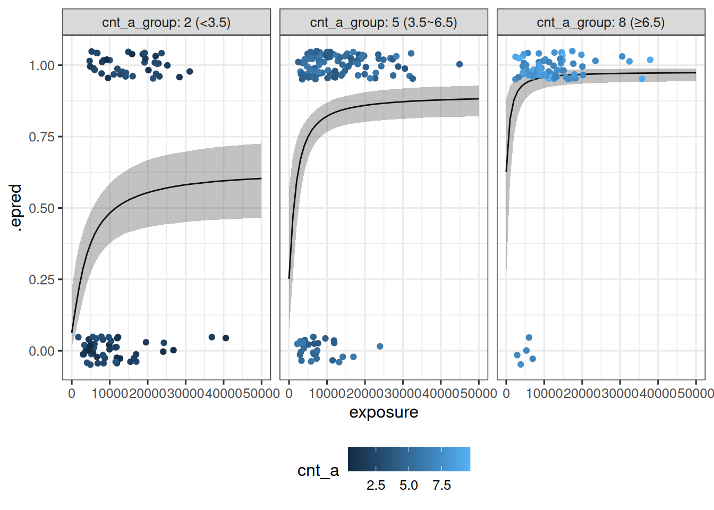

Show the code
library(tidyverse)
library(brms)
library(posterior)
library(tidybayes)
library(here)
library(BayesERtools)
theme_set(theme_bw(base_size = 12))The previous chapter introduced the brms approach to Bayesian Emax modeling, with examples provided for hyperbolic and sigmoidal Emax models, and considering both continuous and binary outcomes. This chapter extends this by building models that include covariates, and shows examples of model comparison using leave-one-out cross-validation (LOO-CV).
library(tidyverse)
library(brms)
library(posterior)
library(tidybayes)
library(here)
library(BayesERtools)
theme_set(theme_bw(base_size = 12))if (require(cmdstanr)) {
# prefer cmdstanr and cache binaries
options(
brms.backend = "cmdstanr",
cmdstanr_write_stan_file_dir = here("_brms-cache")
)
dir.create(here("_brms-cache"), FALSE)
} else {
rstan::rstan_options(auto_write = TRUE)
}Loading required package: cmdstanr
This is cmdstanr version 0.9.0
- CmdStanR documentation and vignettes: mc-stan.org/cmdstanr
- CmdStan path: /home/danielle/.cmdstan/cmdstan-2.36.0
- CmdStan version: 2.36.0
The simulated data set contains three continuous covariates (cnt_a, cnt_b, and cnt_c) that may be related to the continuous oucome response_1. The univariate relationships between each covariate and the response are shown below, along with the relationship between exposure and reponse_1:
d_sim_emax |>
pivot_longer(
cols = c(exposure, cnt_a, cnt_b, cnt_c),
names_to = "variable",
values_to = "value"
) |>
ggplot(aes(value, response_1)) +
geom_point() +
geom_smooth(formula = y ~ x, method = "loess") +
facet_wrap(~ variable, scales = "free_x")
In the brms framework, the Emax function is treated as a structural model and covariates can be placed on any parameter when the model is specified using brmsformula(). As an example, the model specified here sets cnt_a, cnt_b, and cnt_c as covariates on the baseline response:
covariate_model_1 <- brmsformula(
response_1 ~ e0 + emax * exposure / (ec50 + exposure), # structural model
e0 ~ 1 + cnt_a + cnt_b + cnt_c, # covariate model for baseline
emax ~ 1, # covariate model for max response
ec50 ~ 1, # covariate model for EC50
nl = TRUE
)The measurement model and parameter prior are specified using brmsfamily() and prior(), and are the same as for the model without covariates:
gaussian_measurement <- brmsfamily(
family = "gaussian",
link = "identity"
)
parameter_prior <- c(
prior(normal(0, 1.5), nlpar = "e0"),
prior(normal(0, 1.5), nlpar = "emax"),
prior(normal(2000, 500), nlpar = "ec50", lb = 0)
)When interpreting the prior, it is important to remember that there are covariates on e0: the normal(0, 1.5) prior is applied to all regression coefficients. That means that this prior is applied independently to e0_Intercept, e0_cnt_a, e0_cnt_b, and e0_cnt_c.
To apply this model to the continuous data, pass all three of these to brm():
continuous_covariate_fit <- brm(
formula = covariate_model_1,
family = gaussian_measurement,
data = d_sim_emax,
prior = parameter_prior
) Printing the continuous_covariate_fit object provides summary information about the regression coefficients for the covariates and other parameters:
continuous_covariate_fit Family: gaussian
Links: mu = identity; sigma = identity
Formula: response_1 ~ e0 + emax * exposure/(ec50 + exposure)
e0 ~ 1 + cnt_a + cnt_b + cnt_c
emax ~ 1
ec50 ~ 1
Data: d_sim_emax (Number of observations: 300)
Draws: 4 chains, each with iter = 2000; warmup = 1000; thin = 1;
total post-warmup draws = 4000
Regression Coefficients:
Estimate Est.Error l-95% CI u-95% CI Rhat Bulk_ESS Tail_ESS
e0_Intercept 4.13 0.47 3.14 4.98 1.00 1049 1431
e0_cnt_a 0.51 0.01 0.49 0.54 1.00 3683 3141
e0_cnt_b -0.01 0.01 -0.04 0.01 1.00 2945 2920
e0_cnt_c 0.00 0.01 -0.02 0.03 1.00 3405 2529
emax_Intercept 10.70 0.42 9.95 11.61 1.01 1102 1391
ec50_Intercept 3324.06 296.63 2765.73 3936.94 1.00 1106 1601
Further Distributional Parameters:
Estimate Est.Error l-95% CI u-95% CI Rhat Bulk_ESS Tail_ESS
sigma 0.50 0.02 0.46 0.54 1.00 3268 2817
Draws were sampled using sample(hmc). For each parameter, Bulk_ESS
and Tail_ESS are effective sample size measures, and Rhat is the potential
scale reduction factor on split chains (at convergence, Rhat = 1).
Extending the data visualization used earlier, the model predictions can be plotted as a function of both exposure and cnt_a:
cnt_a_map <-
tibble(
cnt_a = c(2, 5, 8),
cnt_a_group = c("2 (<3.5)", "5 (3.5~6.5)", "8 (≥6.5)")
)
sim_exposure_cnt_a <-
continuous_covariate_fit |>
epred_draws(newdata = expand_grid(
exposure = seq(0, 50000, 1000),
cnt_a = c(2, 5, 8),
cnt_b = 5,
cnt_c = 5
)) |>
median_qi() |>
left_join(cnt_a_map, by = join_by(cnt_a))
d_for_plot <-
d_sim_emax |>
mutate(
cnt_a_raw = cnt_a,
cnt_a = case_when(
cnt_a < 3.5 ~ 2,
cnt_a >= 3.5 & cnt_a < 6.5 ~ 5,
cnt_a >= 6.5 ~ 8
)
) |>
left_join(cnt_a_map, by = join_by(cnt_a))
sim_exposure_cnt_a |>
ggplot(mapping = aes(exposure, .epred)) +
geom_path() +
geom_ribbon(
mapping = aes(ymin = .lower, ymax = .upper),
alpha = 0.3
) +
geom_point(
data = d_for_plot,
mapping = aes(y = response_1, color = cnt_a_raw)
) +
facet_wrap(~cnt_a_group, labeller = label_both) +
labs(color = "cnt_a") +
theme(legend.position = "bottom")
Building a covariate model for binary response data follows the same process as for continuous response data. As before, exploratory visualizations are helpful in illustrating the relationships between covariates and the binary response_2 variable:
d_sim_emax |>
pivot_longer(
cols = c(exposure, cnt_a, cnt_b, cnt_c),
names_to = "variable",
values_to = "value"
) |>
mutate(response_2 = factor(response_2)) |>
ggplot(aes(response_2, value)) +
geom_violin(draw_quantiles = .5) +
facet_wrap(~ variable, scales = "free_y")As in the previous chapter, the primary difference between the binary model and the continuous model is the use of the bernoulli_measurement model:
bernoulli_measurement <- brmsfamily(
family = "bernoulli",
link = "logit"
)The actal models specification covariate_model_2 differs only in that it indicates that the binary outcome response_2 is used
covariate_model_2 <- brmsformula(
response_2 ~ e0 + emax * exposure / (ec50 + exposure), # structural model
e0 ~ 1 + cnt_a + cnt_b + cnt_c, # covariate model for baseline
emax ~ 1, # covariate model for max response
ec50 ~ 1, # covariate model for EC50
nl = TRUE
)The parameter_prior is the same as before. All three are passed to brm(), as shown below:
binary_covariate_fit <- brm(
formula = covariate_model_2,
family = bernoulli_measurement,
data = d_sim_emax,
prior = parameter_prior
) After the sampling finishes, printing the model fit object shows parameter estimates and details about the behavior of the sampler:
binary_covariate_fit Family: bernoulli
Links: mu = logit
Formula: response_2 ~ e0 + emax * exposure/(ec50 + exposure)
e0 ~ 1 + cnt_a + cnt_b + cnt_c
emax ~ 1
ec50 ~ 1
Data: d_sim_emax (Number of observations: 300)
Draws: 4 chains, each with iter = 2000; warmup = 1000; thin = 1;
total post-warmup draws = 4000
Regression Coefficients:
Estimate Est.Error l-95% CI u-95% CI Rhat Bulk_ESS Tail_ESS
e0_Intercept -2.78 0.83 -4.41 -1.16 1.00 2031 2458
e0_cnt_a 0.53 0.08 0.38 0.69 1.00 2563 2518
e0_cnt_b -0.01 0.06 -0.14 0.12 1.00 3404 2919
e0_cnt_c -0.19 0.07 -0.32 -0.06 1.00 3574 3044
emax_Intercept 3.28 0.91 1.48 5.08 1.00 2487 2733
ec50_Intercept 2458.06 440.92 1619.03 3327.95 1.00 3585 2739
Draws were sampled using sample(hmc). For each parameter, Bulk_ESS
and Tail_ESS are effective sample size measures, and Rhat is the potential
scale reduction factor on split chains (at convergence, Rhat = 1).
The data visualization for this model is shown below:
cnt_a_map <-
tibble(
cnt_a = c(2, 5, 8),
cnt_a_group = c("2 (<3.5)", "5 (3.5~6.5)", "8 (≥6.5)")
)
sim_exposure_cnt_a <-
binary_covariate_fit |>
epred_draws(newdata = expand_grid(
exposure = seq(0, 50000, 1000),
cnt_a = c(2, 5, 8),
cnt_b = 5,
cnt_c = 5
)) |>
median_qi() |>
left_join(cnt_a_map, by = join_by(cnt_a))
d_for_plot <-
d_sim_emax |>
mutate(
cnt_a_raw = cnt_a,
cnt_a = case_when(
cnt_a < 3.5 ~ 2,
cnt_a >= 3.5 & cnt_a < 6.5 ~ 5,
cnt_a >= 6.5 ~ 8
)
) |>
left_join(cnt_a_map, by = join_by(cnt_a))
sim_exposure_cnt_a |>
ggplot(mapping = aes(exposure, .epred)) +
geom_path() +
geom_ribbon(
mapping = aes(ymin = .lower, ymax = .upper),
alpha = 0.3
) +
geom_jitter(
data = d_for_plot,
mapping = aes(y = response_2, color = cnt_a_raw),
width = 0,
height = .05
) +
facet_wrap(~cnt_a_group, labeller = label_both) +
labs(color = "cnt_a") +
theme(legend.position = "bottom")
The previous two examples illustrate covariates placed on the intercept parameter e0. It is possible to define covariate models on any parameter within the Emax model. Returning to the continuous outcome response_1, the model is specified as follows:
other_covariates <- brmsformula(
response_1 ~ e0 + emax * exposure / (ec50 + exposure), # structural model
e0 ~ 1 + cnt_a, # covariate model for baseline
emax ~ 1 + cnt_b, # covariate model for max response
ec50 ~ 1, # covariate model for EC50
nl = TRUE
)other_covariates_fit <- brm(
formula = other_covariates,
family = gaussian_measurement,
data = d_sim_emax,
prior = parameter_prior
) Printing the other_covariates_fit object provides summary information:
other_covariates_fit Family: gaussian
Links: mu = identity; sigma = identity
Formula: response_1 ~ e0 + emax * exposure/(ec50 + exposure)
e0 ~ 1 + cnt_a
emax ~ 1 + cnt_b
ec50 ~ 1
Data: d_sim_emax (Number of observations: 300)
Draws: 4 chains, each with iter = 2000; warmup = 1000; thin = 1;
total post-warmup draws = 4000
Regression Coefficients:
Estimate Est.Error l-95% CI u-95% CI Rhat Bulk_ESS Tail_ESS
e0_Intercept 4.10 0.46 3.11 4.92 1.00 1247 1297
e0_cnt_a 0.51 0.01 0.49 0.54 1.00 3027 2684
emax_Intercept 10.70 0.42 9.95 11.60 1.00 1297 1391
emax_cnt_b -0.01 0.02 -0.04 0.03 1.00 2619 2604
ec50_Intercept 3328.33 289.13 2777.47 3909.33 1.00 1418 1664
Further Distributional Parameters:
Estimate Est.Error l-95% CI u-95% CI Rhat Bulk_ESS Tail_ESS
sigma 0.50 0.02 0.46 0.54 1.00 2635 2023
Draws were sampled using sample(hmc). For each parameter, Bulk_ESS
and Tail_ESS are effective sample size measures, and Rhat is the potential
scale reduction factor on split chains (at convergence, Rhat = 1).
The brms package provides a flexible interface for model comparison using LOO-CV and WAIC, using the loo package internally. One workflow for calling this interface is illustrated in this section, using the three possible Emax models as examples:
# no covariates
base_model <- brmsformula(
response_1 ~ e0 + emax * exposure / (ec50 + exposure),
e0 ~ 1,
emax ~ 1,
ec50 ~ 1,
nl = TRUE
)
# one predictor on e0
cnt_a_model <- brmsformula(
response_1 ~ e0 + emax * exposure / (ec50 + exposure),
e0 ~ 1 + cnt_a,
emax ~ 1,
ec50 ~ 1,
nl = TRUE
)
# three predictors on e0
cnt_abc_model <- brmsformula(
response_1 ~ e0 + emax * exposure / (ec50 + exposure),
e0 ~ 1 + cnt_a + cnt_b + cnt_c,
emax ~ 1,
ec50 ~ 1,
nl = TRUE
)In addition to calling brm() to estimate regression coefficients, the add_criterion() function is called to run the LOO-CV procedure and store the results internally within the brmsfit object:
base_fit <- base_model |>
brm(
family = gaussian_measurement,
data = d_sim_emax,
prior = parameter_prior
) |>
add_criterion("loo")
cnt_a_fit <- cnt_a_model |>
brm(
family = gaussian_measurement,
data = d_sim_emax,
prior = parameter_prior
) |>
add_criterion("loo")
cnt_abc_fit <- cnt_abc_model |>
brm(
family = gaussian_measurement,
data = d_sim_emax,
prior = parameter_prior
) |>
add_criterion("loo")To compare models that have LOO criteria information added, use loo_compare():
model_comparison <- loo_compare(
base_fit,
cnt_a_fit,
cnt_abc_fit
)
model_comparison elpd_diff se_diff
cnt_a_fit 0.0 0.0
cnt_abc_fit -1.6 0.9
base_fit -283.3 15.4
In this example, cnt_a_fit model outperforms the other two models.
By default the printed output shows the most important columns, but the return value from loo_compare() contains additional information relevant to the model comparison. To view all columns, call the print method with simplify = FALSE:
print(model_comparison, simplify = FALSE) elpd_diff se_diff elpd_loo se_elpd_loo p_loo se_p_loo looic
cnt_a_fit 0.0 0.0 -216.7 13.1 4.5 0.5 433.4
cnt_abc_fit -1.6 0.9 -218.3 13.3 6.6 0.7 436.6
base_fit -283.3 15.4 -500.0 11.4 2.8 0.3 1000.0
se_looic
cnt_a_fit 26.3
cnt_abc_fit 26.5
base_fit 22.8